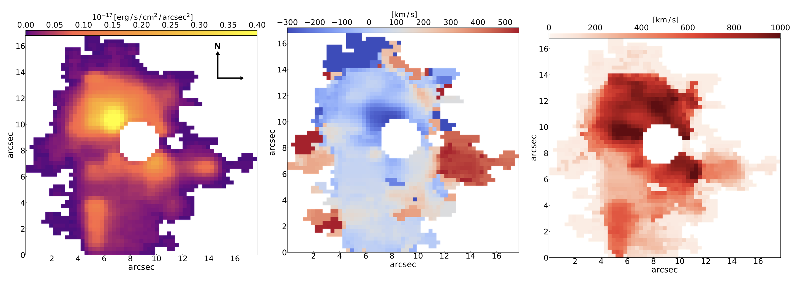
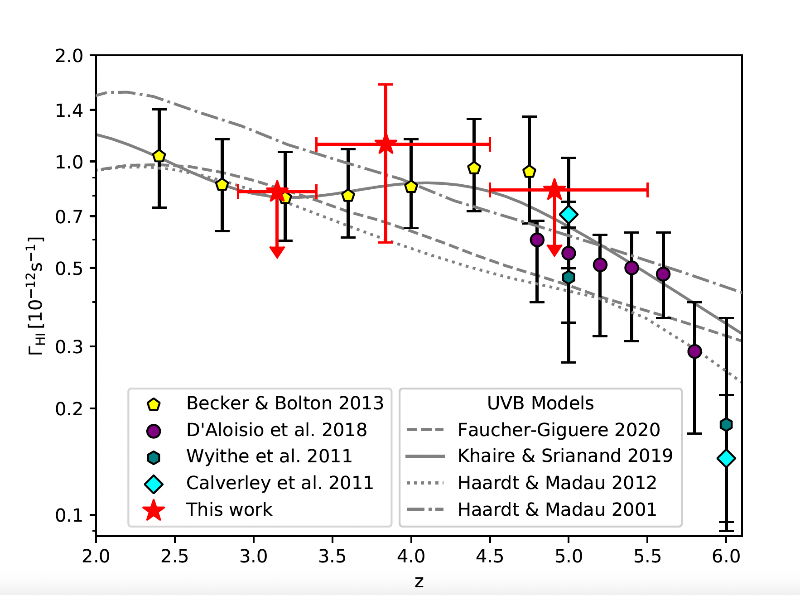
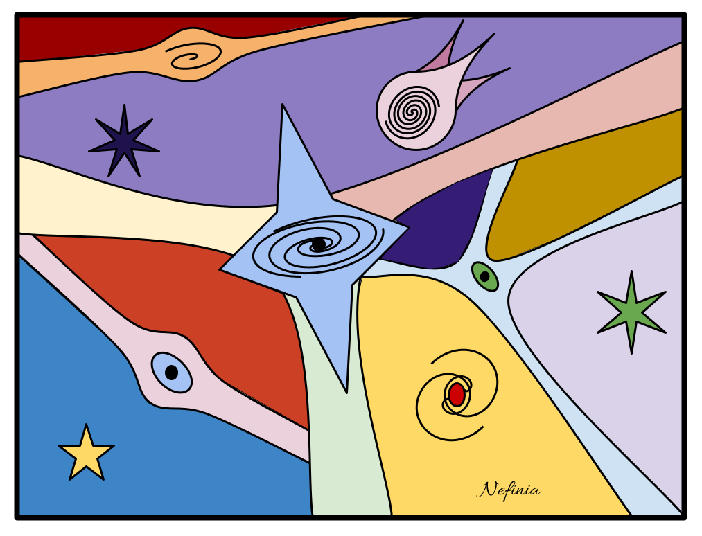
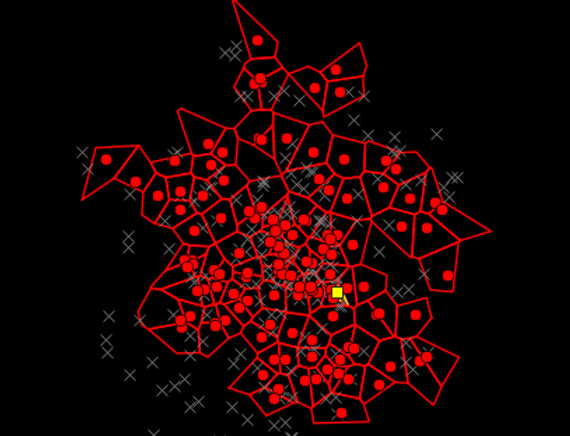
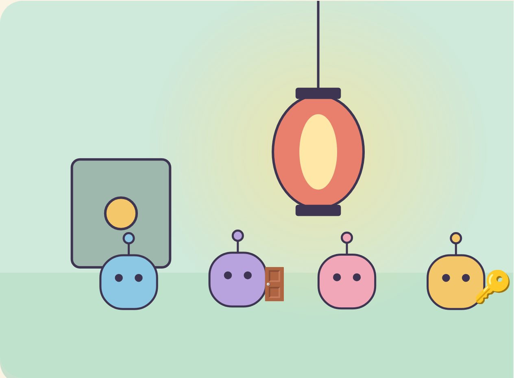

Ciencia
Mi investigación busca comprender la formación y evolución de las galaxias dentro de su entorno cósmico, en particular en el Universo temprano. A partir del análisis de cúmulos y protocúmulos de galaxias lejanos a z ~ 2, estudio los procesos físicos que impulsan el crecimiento de las galaxias, el papel de la estructura a gran escala y la interacción entre la formación estelar, los agujeros negros supermasivos y la dinámica del gas.
Me especializo en datos multilongitud de onda: combino espectroscopía de campo integral (IFS) e imágenes de alta resolución para estudiar la interacción entre las galaxias y su entorno. Con observaciones de instrumentos como KCWI, HST y MUSE, analizo la cinemática del gas, la retroalimentación de los núcleos galácticos activos (AGN) y la presencia de luz intracúmulo difusa (ICL) como indicador de la formación temprana de estructuras. Mi trabajo también incluye simulaciones numéricas y modelos cosmológicos para interpretar los datos observacionales y ofrecer un marco teórico a los estudios de evolución galáctica.
Una parte importante de mi investigación está dedicada al medio circungaláctico e intergaláctico (CGM/IGM) y a cómo las galaxias intercambian gas con su entorno. Estudiando galaxias emisoras de Lyman-alfa y sus extensos halos gaseosos, impongo restricciones al fondo ultravioleta cósmico (UVB) y a la distribución de la materia en la estructura a gran escala del Universo.
Mi trabajo es profundamente interdisciplinario y abarca la astrofísica, la cosmología y la ciencia de datos. Colaboro activamente con equipos internacionales para desarrollar estrategias de observación y técnicas de análisis innovadoras. Además, me dedico a la comunicación científica y la divulgación, integrando la astronomía en iniciativas culturales y educativas más amplias para acercar conceptos científicos complejos a públicos diversos.
Consulta aquí mi lista de publicaciones
Último artículo
- Caught in the act: diffuse stellar and Lyα emission around a halo-less quasar in the assembling cluster CARLA J0800+4029 at z = 2
S. G. Gallego, S. Mei, E. Daddi, G. Noirot, D. Wylezalek & R. M. Rich, enviado a Astronomy & Astrophysics, arXiv:2609.37445 (2026).
Un cuásar en el corazón de un cúmulo de galaxias en formación casi no muestra gas brillante a su alrededor. El gas se ilumina un poco más allá, a lo largo de una corriente de marea de estrellas y galaxias en plena fusión.
Publicaciones con revisión por pares
Estos son los artículos con revisión por pares en los que he participado, desde las galaxias y la red cósmica hasta las atmósferas planetarias.
- Ly-alpha emission reveals two satellite halos around massive groups at z ~ 3: The puzzling case of a quiescent central galaxy
S. Guo et al. (incluida S. G. Gallego), Astronomy & Astrophysics, 704, A340 (2025). - Coevolution of halo and quasar properties in dense environments: CARLA J1017+6116 at z = 2.8
S. G. Gallego et al., Astronomy & Astrophysics, 698, A243 (2025). - A giant disk galaxy two billion years after the Big Bang
W. Wang et al. (incluida S. G. Gallego), Nature Astronomy, 9, 710–719 (2025). - Characterizing the circumgalactic medium of quasars at z ~ 2.2 through Hα and Lyα emission
V. Langen et al. (incluida S. G. Gallego), Monthly Notices of the Royal Astronomical Society, 519, 5099–5113 (2023). - The MUSE eXtremely Deep Field: Individual detections of Lyα haloes around rest-frame UV-selected galaxies at z ≃ 2.9–4.4
H. Kusakabe et al. (incluida S. G. Gallego), Astronomy & Astrophysics, 660, A44 (2022). - Constraints on the structure and seasonal variations of Triton’s atmosphere from the 5 October 2017 stellar occultation and previous observations
J. Marques Oliveira et al. (incluida S. G. Gallego), Astronomy & Astrophysics, 659, A136 (2022). - Constraining the cosmic UV background at z > 3 with MUSE Lyman-α emission observations
S. G. Gallego et al., Monthly Notices of the Royal Astronomical Society, 504, 16–32 (2021). - A giant Lyα nebula and a small-scale clumpy outflow in the system of the exotic quasar J0952+0114 unveiled by MUSE
R. A. Marino et al. (incluida S. Gallego), The Astrophysical Journal, 880, 47 (2019). - The large- and small-scale properties of the intergalactic gas in the Slug Lyα nebula revealed by MUSE He II emission observations
S. Cantalupo et al. (incluida S. G. Gallego), Monthly Notices of the Royal Astronomical Society, 483, 5188–5204 (2019). - Stacking the Cosmic Web in fluorescent Lyα emission with MUSE
S. G. Gallego et al., Monthly Notices of the Royal Astronomical Society, 475, 3854–3869 (2018). - Dark Galaxy Candidates at Redshift ~3.5 Detected with MUSE
R. A. Marino et al. (incluida S. G. Gallego), The Astrophysical Journal, 859, 53 (2018). - Satellite infall and mass deposition on the Galactic Centre
S. G. Gallego & J. Cuadra, Monthly Notices of the Royal Astronomical Society: Letters, 467, L41–L45 (2017). - Ubiquitous giant Lyα nebulae around the brightest quasars at z ~ 3.5 revealed with MUSE
E. Borisova et al. (incluida S. G. Gallego), The Astrophysical Journal, 831, 39 (2016).
Proyectos actuales
Mi investigación actual explora la formación y evolución de las estructuras a gran escala en el Universo temprano, con foco en los cúmulos y protocúmulos de galaxias. Últimamente me interesa comprender la conexión entre la luz intracúmulo (ICL) y los entornos de cúmulos y protocúmulos.

Coevolución de las galaxias y su entorno en el mediodía cósmico
Estudio de la interacción entre las galaxias y su entorno a gran escala a z~2, mediante el análisis de la dinámica del gas, la retroalimentación de AGN y la luz intracúmulo con datos de KCWI y HST, para comprender el ensamblaje temprano de las estructuras cósmicas.
Último artículo →Más detalles aquí
El fondo ultravioleta cósmico
Restricción de la intensidad del UVB cósmico en torno a galaxias emisoras de Lyman-alfa, con datos de MUSE y simulaciones cosmológicas.
Más detalles aquí
Detección de la red cósmica
Búsqueda de señales de la red cósmica en torno a galaxias emisoras de Lyman-alfa, con datos de MUSE y restricciones de simulaciones cosmológicas.
Más detalles aquí
Detección de cúmulos de galaxias
Uso de la técnica de la secuencia roja para detectar cúmulos de galaxias en los sondeos CFHTLS/VIPERS y estimar su riqueza óptica.
Más detalles aquí
Simulaciones del centro galáctico
Uso de simulaciones hidrodinámicas para comprender la entrada de gas en los ~200 pc internos de la Vía Láctea provocada por la fusión con una galaxia satélite.
Más detalles aquíInvestigación en seguridad de la IA
Junto a la astronomía, parte del trabajo de CosmoVentures estudia cómo supervisar y contener sistemas de IA. Estos informes provienen de sprints de Apart Research: resultados tempranos, compartidos abiertamente.
AI Incident Response Sprint · sep. 2026
Different Reviewers, Same Blind Spot
Reproduciendo una fuga real de sandbox de julio de 2026, el equipo comparó un monitor, cuatro monitores idénticos y cuatro revisores con roles distintos. Los revisores especializados mantuvieron la contención en más pasos peligrosos, pero todas las configuraciones compartían el mismo punto ciego.
Con Muhammad Shoaib Altaf, Devesh Sawant y Xin Li.
Leer el informe →Digital Minds Research Sprint · ago. 2026
False Epistemic Redundancy
¿Pedirle a un mismo modelo que razone como varias personas amplía lo que considera? En casos reales, respuestas más variadas no llevaron con más frecuencia a la explicación decisiva.
Con Anya Habana.
Página del proyecto →Leer el informe →
AI Incident Response Sprint · sep. 2026
Playing Through an AI Incident
Little Agent Lab como pieza de investigación: un juego en el navegador donde armas un equipo de agentes de IA sin dejar que se filtre un secreto, para hacer tangibles la supervisión y la verificación ante un público joven.
Jugar a Little Agent Lab →Leer el informe →Trayectoria de investigación
- Investigación de licenciatura: Mi investigación de licenciatura se centró en la dinámica de la entrada de gas en los ~200 pc internos de la Vía Láctea, analizando cómo la fusión con una galaxia satélite perturba la distribución del gas en el centro galáctico. Mediante simulaciones hidrodinámicas, estudié cómo el gas se canaliza hacia la región central, lo que puede dar lugar a formación estelar y actividad cerca del agujero negro supermasivo Sagitario A*. Este trabajo contribuyó a comprender el papel de las fusiones menores en la alimentación de los agujeros negros centrales y en la configuración de la estructura interna de la Vía Láctea. Continué trabajando en este tema durante mi investigación de maestría, refinando los modelos dinámicos e incorporando nuevas restricciones de simulación. Este esfuerzo dio lugar a un artículo publicado en MNRAS Letters, con claves sobre cómo la caída de galaxias satélite influye en la dinámica del gas en el centro galáctico (Artículo en MNRAS).
- Investigación de maestría: Mi tesis se centró en la detección de cúmulos de galaxias mediante la técnica de la secuencia roja en los sondeos CFHTLS/VIPERS, caracterizando sus propiedades ópticas y estimando las masas de los cúmulos a partir de su riqueza óptica (Tesis de maestría). Este trabajo perfeccionó los métodos fotométricos de detección de cúmulos y aportó restricciones a la distribución de masa de los cúmulos de galaxias a corrimientos al rojo intermedios. Además de la tesis, trabajé en un pequeño proyecto en el que desarrollé mi propio código de transferencia radiativa para simular la polarización de supernovas (SNe), investigando cómo las asimetrías en el mecanismo de explosión y la dispersión por polvo afectan a las señales de polarización observadas ([Enlace]). Esto permitió comprender mejor cómo la geometría de la explosión influye en las curvas de luz y los perfiles de polarización de las SNe. También realicé un proyecto semestral sobre las colas de marea en cúmulos globulares, identificando corrientes estelares que ayudan a modelar el potencial del centro galáctico. Este trabajo contribuyó a entender cómo los cúmulos globulares interactúan dinámicamente con el campo gravitacional de la Vía Láctea, con claves tanto sobre la evolución de los cúmulos como sobre la distribución de masa subyacente del centro galáctico.
- Investigación doctoral (ETH Zurich): Durante mi doctorado en la ETH Zurich me centré en revelar las propiedades de la red cósmica a través de la emisión Lyman-alfa. Para ello desarrollé una técnica de apilamiento específica que alinea observaciones de espectroscopía de campo integral de MUSE de emisores Lyman-alfa, con el fin de detectar por primera vez en emisión las débiles estructuras filamentosas de la red cósmica. Este método aportó nueva evidencia observacional sobre la distribución a gran escala del gas intergaláctico y permitió conectar directamente las galaxias con su entorno. A partir de esta detección, usé los mismos datos para restringir la intensidad del fondo ultravioleta cósmico (UVB) en las regiones de baja densidad de la red cósmica, fijando nuevos límites a cómo la radiación ionizante extragaláctica regula las propiedades del gas intergaláctico. Mi trabajo tendió un puente entre las predicciones teóricas y las restricciones observacionales sobre la emisión de la red cósmica, con claves sobre cómo el gas intergaláctico difuso se ioniza, se distribuye y se conecta con la evolución de las galaxias en el Universo temprano. (Tesis doctoral).
- Investigación posdoctoral (Caltech): En Caltech estudié un sistema protocúmulo a alto corrimiento al rojo (z=2.3) con espectroscopía de campo integral de KCWI, y descubrí múltiples halos Lyα extendidos alrededor de galaxias en un entorno denso. Mi investigación aportó nueva evidencia de flujos de salida impulsados por AGN y de una formación estelar intensificada en regiones sobredensas de la red cósmica. Integré conjuntos de datos multilongitud de onda (ALMA, HST, Spitzer, Chandra) para estudiar la relación entre la cinemática del gas, la evolución galáctica y los procesos impulsados por AGN. Mis resultados contribuyeron a comprender cómo la retroalimentación de los agujeros negros supermasivos influye en el crecimiento de las galaxias en el Universo temprano, en particular en entornos que evolucionarán hasta convertirse en cúmulos masivos a z=0. Durante mi etapa en Caltech también colaboré con el grupo de neurociencia del comportamiento del Prof. Shinsuke Shimojo, explorando la volición y el sentido de agencia como una dimensión del estado de flujo.
- Investigación posdoctoral (Université Paris Cité): Actualmente investigo varios protocúmulos del sondeo CARLA, una muestra de estructuras a alto corrimiento al rojo centradas en AGN radio-ruidosos. Mi investigación se centra en la cinemática del gas, los flujos de salida impulsados por AGN y la aparición de la luz intracúmulo (ICL), componentes clave para entender la formación de cúmulos en el mediodía cósmico (z~2). Combinando observaciones de HST, KCWI y otras longitudes de onda, examino cómo los entornos densos moldean la evolución de las galaxias y desencadenan una mayor actividad AGN. Mi trabajo contribuye a caracterizar las primeras etapas de formación de los cúmulos e identificar los mecanismos que regulan la formación estelar y la acreción de gas en los progenitores de los cúmulos de galaxias masivos actuales.